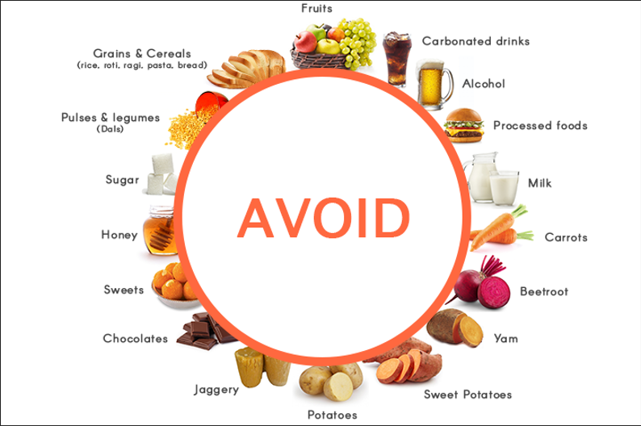

Keto Diet
What is the Keto Diet?
The ketogenic (keto) diet is a low-carbohydrate, high-fat eating
plan designed to help the body enter a metabolic state called
ketosis. In this state, the body primarily burns fat for energy
instead of carbohydrates, leading to significant fat loss and
improved health markers. While the diet includes moderate protein
and high fat consumption, carbs are limited to 5-10% of daily
intake, promoting fat-based fuel usage. Wondering if keto could be
the right choice for you? Let’s delve deeper!
The Benefits of a Keto Diet
The keto diet offers numerous potential benefits, especially for
weight loss and metabolic health. By reducing carb intake and
relying on fats, it can help control blood sugar levels, reduce
insulin spikes, and encourage the body to use stored fat as
energy. This can result in rapid weight loss and a steady energy
flow throughout the day.
Additionally, the diet may support improved mental clarity,
decreased hunger, and potentially better cholesterol and blood
pressure levels. Due to its blood sugar management benefits, keto
is often recommended for individuals with type 2 diabetes or
insulin resistance.
How Does the Keto Diet Work?

The keto diet works by drastically reducing carbohydrates and
replacing them with fats. As carb levels drop, the body begins
producing ketones, a type of fuel derived from stored fat, which
supplies energy in the absence of glucose. With continuous
adherence, the body becomes more efficient at burning fat and
producing ketones, entering a sustained state of ketosis.
This metabolic adaptation allows for reduced appetite and encourages
fat loss, with the added benefit of sustained energy throughout the
day. It’s essential to limit carbohydrate intake and prioritize
healthy fats such as avocados, nuts, and olive oil to maintain
effective ketosis.
Getting Started with the Keto Diet
Transitioning into a keto lifestyle may feel challenging at first,
but these steps can help ease the process:
-
1. Understand the Basics: Familiarize yourself
with low-carb foods and high-fat options to build balanced
keto-friendly meals.
-
2. Stock Up on Essentials: Purchase foods rich in
healthy fats like avocados, eggs, nuts, and leafy greens to
prepare for your new eating routine.
-
3. Track Your Carbs: Monitoring your carb intake
is vital to achieving and maintaining ketosis. Consider using
NourishWise for convenience.
-
4. Stay Hydrated: Drinking plenty of water
supports metabolism and can ease the initial “keto flu” symptoms
some experience when starting the diet.
Foods You Can Eat on a Keto Diet
Here are staple foods for your keto journey:
-
1. Healthy Fats: Olive oil, coconut oil, and
avocados provide quality fats for energy.
-
2. Protein Sources: Meat, poultry, fish, and eggs
make up the protein aspect of your meals.
-
3. Non-Starchy Vegetables: Leafy greens,
broccoli, and zucchini are low-carb options.
-
4. Nuts and Seeds: Almonds, chia seeds, and
flaxseeds for added nutrients and healthy fats.
-
5. Dairy: Cheese, butter, and cream in moderation
can be part of a keto meal plan.
Foods to Limit or Avoid

To stay in ketosis, it’s essential to avoid the following:
-
1. High-Carb Foods: Bread, pasta, rice, and
grains should be avoided.
-
2. Sugary Foods: Candy, sodas, and sweetened
drinks can hinder ketosis.
-
3. Starchy Vegetables: Potatoes, corn, and
carrots are higher in carbs.
-
4. Processed Foods: Packaged snacks often contain
added sugars or carbs.
Fun Tips to Enjoy the Keto Diet
Make the keto journey more enjoyable with these tips:
-
1. Try Keto Recipes: Experiment with recipes like
cauliflower pizza or almond flour pancakes.
-
2. Use Low-Carb Substitutes: Swap carbs for
alternatives like zucchini noodles or lettuce wraps.
-
3. Make It Colorful: Add variety with colorful
vegetables and keto-friendly snacks.
-
4. Plan Ahead: Preparing meals in advance ensures
you have keto options readily available.
Conclusion
The keto diet is a unique, low-carb lifestyle that prioritizes fats
for energy, supporting weight loss and improved metabolic health. If
you're interested in trying keto, start by learning the basics and
stocking up on healthy fats and low-carb foods. With dedication and
variety, the keto diet can become a delicious, satisfying way to
nourish your body. Ready to give keto a go? Dive into its world and
explore the potential benefits of a low-carb lifestyle!